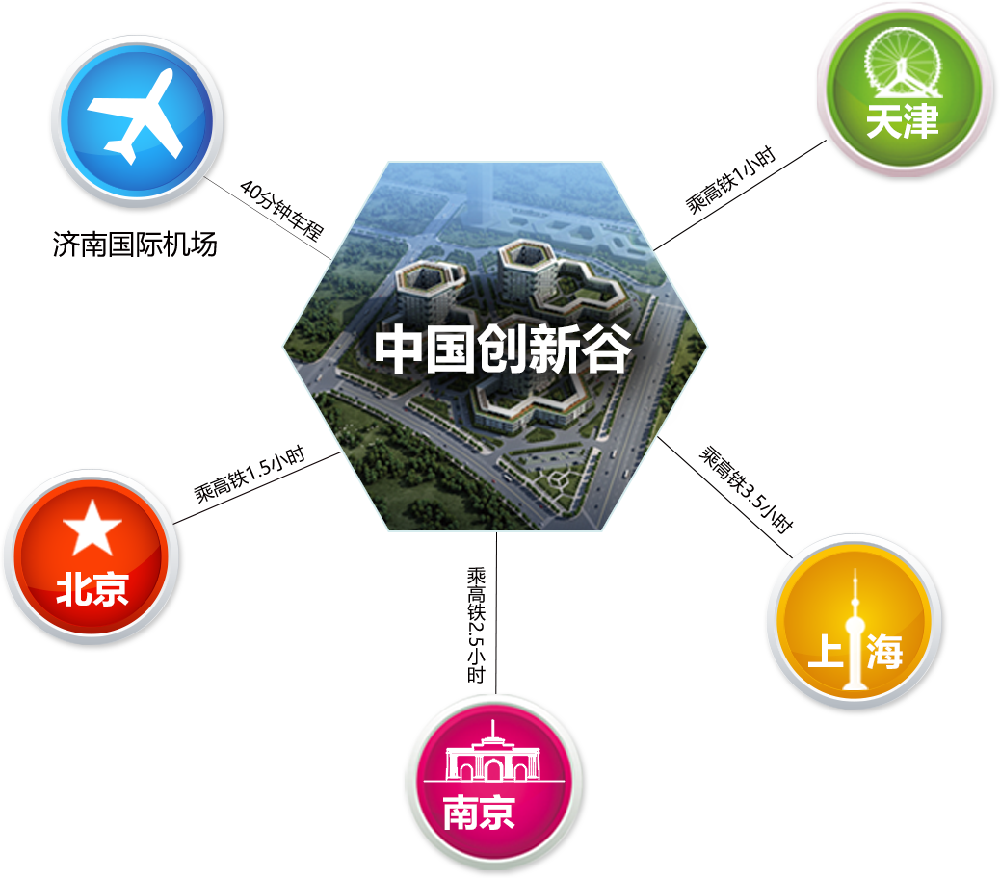
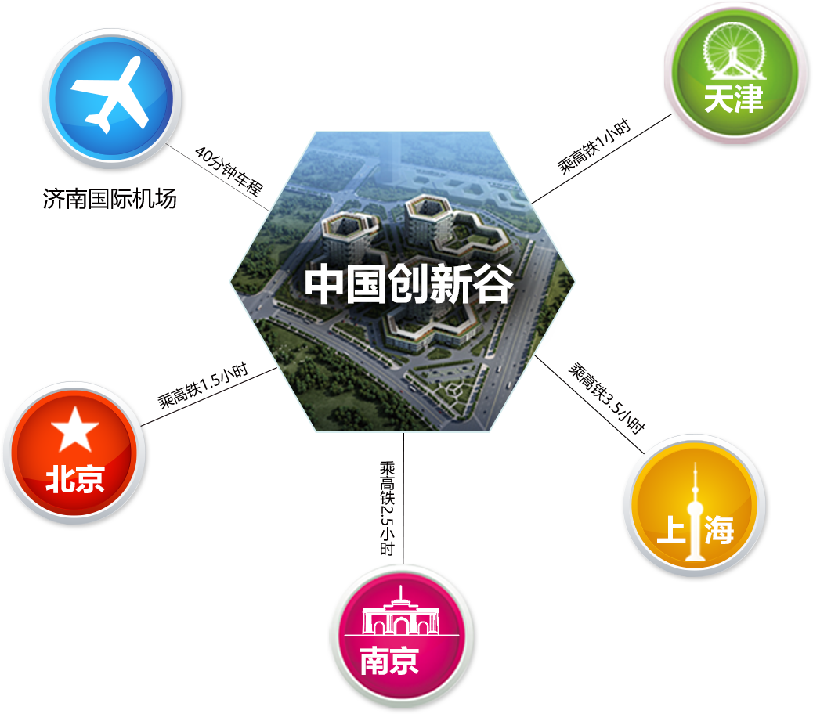
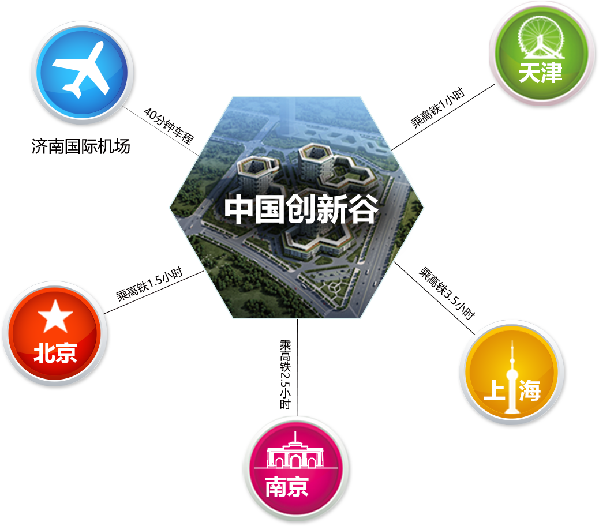

济南梦向西，聚焦创新谷
中国创新谷位于济南西南部，总体规划面积70平方公里，是济南市科教和人力资源最为密集、交通最为发达的地区，创新谷以建设工作、生活、休闲三位一体的第四代科技园区为目标，是济南新的增长极。

知识密集程度高，教育资源丰富的智力资源和新区。高等院校众多，高端人才聚集，研发与治理资源居全省之首。
 

中国创新谷位于济南西南部，总体规划面积70平方公里，是济南市科教和人力资源最为密集、交通最为发达的地区，创新谷以建设工作、生活、休闲三位一体的第四代科技园区为目标，是济南新的增长极。


知识密集程度高，教育资源丰富的智力资源和新区。高等院校众多，高端人才聚集，研发与治理资源居全省之首。
